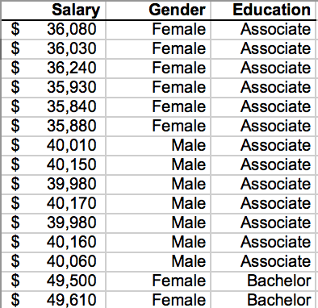
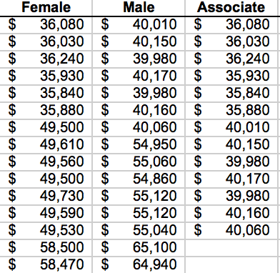
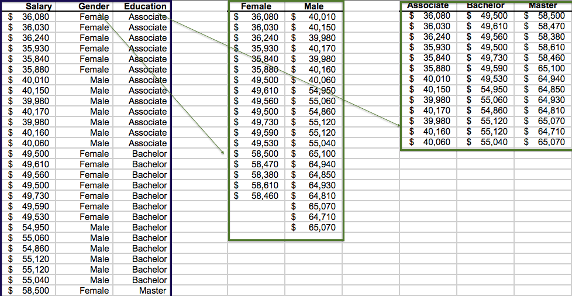
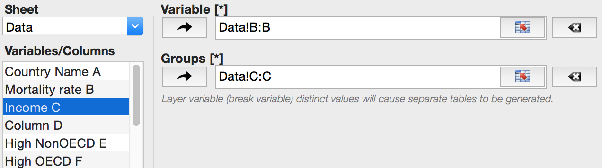

class: inverse layout: true --- #Descriptive Statistics ### with group variable <br/><br/> See Also <a href="tutorial_analysis_basic_statistics_descriptive_statistics.html"><i class="fa fa-youtube-play" aria-hidden="true"></i>`Descriptive Statistics (unstacked data)`</a> .footer[ .half-col[ <a href="analysis_basic_statistics_descriptive_statistics_group_variable.html"><i class="fa fa-book" aria-hidden="true"></i> Return to the manual</a> ] .half-col[ Click or tap to continue ] ] --- ### Group variable This command is a version of the <a href="tutorial_analysis_basic_statistics_descriptive_statistics.html"><i class="fa fa-youtube-play" aria-hidden="true"></i>`Descriptive Statistics`</a> command that uses different input data layout: observations are in a single column with another column (group variable) indicating which sub-group they belong to. A group variable must have the same number of cases (rows) as the variable with observations. ### Data layout .row[ .col-1-6[ ] .col-1-3[ .center[ `Descriptive Statistics`<br>`with group variable` <p></p> .smaller[ *Values of the group variable `Gender` define the sub-groups for observations.* ] ] ] .col-1-3[ .center[ `Descriptive Statistics` <br> <br> <p></p> .smaller[ *Each row is an observation and each column is a sub-group.* ] ] ] ] --- ### When to use For example, if you have an annual salary survey results with additional information about a respondent - gender and the highest level of education completed, you may be interested to get a summary of the salary differences *between males and females*, and *between respodents with different education level*. So to use the `Descriptive Statistics` command for raw data (each row represents a respondent) you are required to *unstack* the `Salary` variable by `Gender` and by `Education`. With a group variable you can quickly recalculate statistics with a different grouping. > <p></p> >Data from the <a href="data/Stacked and unstacked data.xlsx" target="_blank">`Stacked and unstacked data`</a> workbook, `Data2` sheet. --- .left-column[ ## Data Input Group variable ] .right-column[ - Open the <a href="data/Stacked and unstacked data.xlsx" target="_blank">`Stacked and unstacked data`</a> workbook. <a href="slide_opendatasetexample.html" target="_blank"> .smaller[ <i class="fa fa-youtube-play" aria-hidden="true"></i> How to open a dataset with example. ] </a> - Run the command: > .code-grey[Statistics→] `Basic Statistics→Descriptive Statistics (with group variable)` - Select the `Mortality rate` column as `Variable`. - Select the `Income` column as `Group`. <p></p> - Under the `Advanced Options`: - Select the `Single Table` value for the `Report` option. - Click the `OK` button. ] --- .left-column[ ## Results ] .right-column[ The produced report is identical to the one we got using the `Descriptive Statistics` command for unstacked data. See the <a href="tutorial_analysis_basic_statistics_descriptive_statistics.html"><i class="fa fa-youtube-play" aria-hidden="true"></i>`Descriptive Statistics`</a> command tutorial to know more about the report options. ><img src="images-slides/1001-descriptive-statistics-results-single-table-report-matrix-animation.gif" width="472" height="505" alt="Descriptive Statistics report as matrix"> ] --- # Thanks for watching! > <a href="analysis_basic_statistics_descriptive_statistics_group_variable.html"><i class="fa fa-book" aria-hidden="true"></i> Return to the manual</a> > <a href="javascript: slideshow.gotoFirstSlide();"><i class="fa fa-repeat" aria-hidden="true"></i> Repeat the slideshow</a> Related topics: > <a href="tutorial_analysis_basic_statistics_descriptive_statistics.html"><i class="fa fa-youtube-play" aria-hidden="true"></i>`Descriptive Statistics`</a> Still have questions? > <a href="https://www.analystsoft.com/en/contact/"> <i class="fa fa-envelope" aria-hidden="true"></i> Contact us</a>